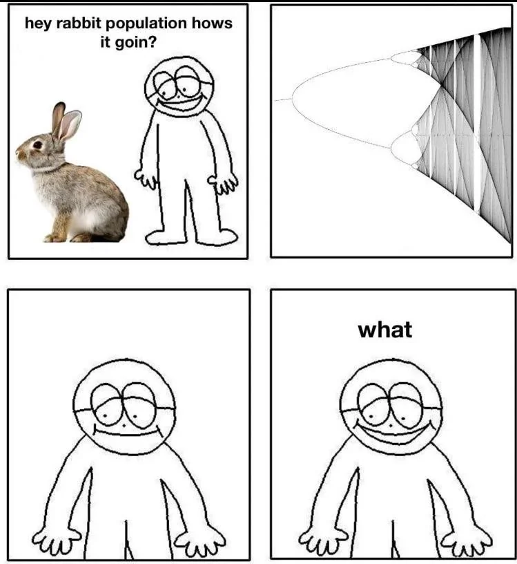

La aplicación logística es un modelo matemático utilizado ampliamente en estudios de dinámica poblacional, teoría del caos y sistemas no lineales. Fue popularizada por el matemático Robert May en los años 70 y se representa mediante la siguiente ecuación iterativa:
xn+1 = r * xn * (1 - xn)
En esta ecuación, xn representa la población normalizada (es decir, un valor entre 0 y 1) en la n-ésima iteración, y r es un parámetro de control que determina la dinámica del sistema. La aplicación logística es especialmente interesante porque exhibe un espectro completo de comportamientos, desde estabilidad hasta caos, dependiendo del valor de r.
A medida que el valor de r aumenta, la aplicación logística muestra diferentes tipos de dinámica:
Una de las formas más visuales de entender este comportamiento es a través del diagrama de bifurcación. Este gráfico muestra los valores asintóticos de xn en función del parámetro r. A medida que r aumenta, se pueden observar claramente las bifurcaciones y el paso al caos.
Este diagrama es una herramienta poderosa para estudiar la transición del orden al caos en sistemas dinámicos y sirve como base para muchas otras aplicaciones en matemáticas, física y biología.
A continuación, puedes visualizar el diagrama de bifurcación de la aplicación logística. Usa los controles para modificar los límites del parámetro r y observa cómo cambia el comportamiento del sistema.
Una regla sencilla. Infinitos comportamientos.
La línea dorada señala r. Cambia x₀ para observar cómo evoluciona la misma regla desde otra población.
Último valor {{ lastValue.toFixed(6) }} · Población normalizada entre 0 y 1
{{ error }}
}Se descartan las iteraciones de estabilización y se dibujan las 256 siguientes por muestra de r. Una mayor intensidad indica más visitas; es una aproximación numérica, no una prueba de caos.